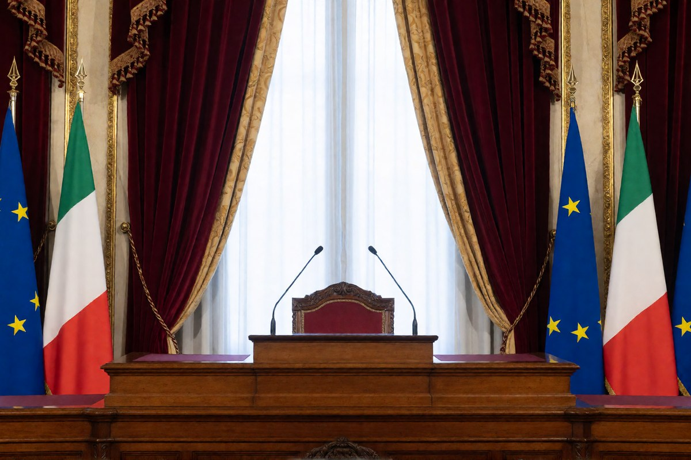

Politica italiana · 14 novembre 2026
Come Giuseppe Conte è arrivato a Palazzo Chigi, fatto per fatto

Un video di Maurizio Attilio Ricci ripercorre la carriera del presidente del Movimento 5 stelle. Qui i passaggi verificati uno per uno, separando i fatti accertati dalle insinuazioni.
di Franco Zanghì
Una storia già accaduta in Italia, e che molti hanno dimenticato. La racconta Maurizio Attilio Ricci, autore di un libro su Giuseppe Conte e del canale Oltreoceano. Qui i suoi passaggi sono stati ripresi e controllati uno per uno: quello che sostiene lui resta attribuito a lui, quello che risulta verificato è indicato come tale. La premessa è la sua, e vale: non è un attacco, è una domanda.
Un premier senza elezioni
Il primo giugno 2018 Conte giura da presidente del Consiglio senza essere mai stato candidato a nulla. Luigi Di Maio lo aveva presentato appena tre mesi prima, il primo marzo, come possibile ministro della Pubblica amministrazione di un governo del Movimento 5 stelle. Presidenti del Consiglio non parlamentari l'Italia ne ha avuti — Ciampi, Dini, Monti — ma erano nomi noti: un governatore della Banca d'Italia, un commissario europeo. Conte era un professore di diritto privato a Firenze.
Il concorso e il curriculum
Il fatto accertato è questo: Conte e il professor Guido Alpa furono incaricati insieme dal Garante della privacy di difenderlo in una causa contro la Rai. Lo conferma Conte stesso in una lettera a Repubblica, precisando che accadde nel 2001 e non nel 2002 come sostiene il video, quindi prima del concorso. Alpa sedeva fra i commissari del concorso del 2002 da cui Conte uscì idoneo a professore ordinario. Il caso esplose nell'ottobre 2018; Conte rispose di aver vinto il concorso senza violare alcuna legge e Raffaele Cantone, allora presidente dell'Autorità anticorruzione, parlò di una spiegazione plausibile. Non risulta accertato alcun illecito: resta una questione di opportunità.
Il curriculum depositato alla Camera dice che dal 2008 al 2012 Conte ha soggiornato ogni estate alla New York University, per almeno un mese, per aggiornare i suoi studi. Nel maggio 2018 il New York Times scrisse che nell'ateneo non c'era traccia di lui; l'università precisò però di non tenere registri per i programmi brevi e per gli ospiti, e Conte spiegò di aver usato la biblioteca di giurisprudenza. Non è stato dimostrato che il titolo fosse inventato: è una formula da curriculum che promette più di quello che contiene.
I redditi e il decreto
Le cifre esatte, dalle dichiarazioni pubblicate dal Parlamento: imponibile 2017, 370.314 euro; imponibile 2018, 1.155.229 euro. Quasi il triplo, nell'anno in cui diventa presidente del Consiglio. La spiegazione, che ricorda anche Ricci, è che Conte chiudeva gli incarichi pendenti dello studio e fatturò in un anno compensi che altrimenti avrebbe incassato nel tempo; nel 2019 il reddito è sceso a circa 158.000 euro. È un dato pubblico e spiegato: il resto sono interpretazioni.
Sul decreto del 10 aprile 2020 l'osservazione di Ricci regge: il testo consentiva «attività motoria in prossimità della propria abitazione», ad almeno un metro dagli altri. La formula nacque dentro un'emergenza in cui nessuno aveva un manuale e fu chiarita dopo, come brevi spostamenti vicino a casa; dal 4 maggio, con il decreto del 26 aprile, il limite della prossimità cadde. Ma quando si limita la libertà di sessanta milioni di persone un avverbio vago non è un dettaglio, e il decreto porta la firma del presidente del Consiglio.
Le consulenze davanti alla Commissione Covid
Qui serve precisione, perché si parla di testimonianze e non di sentenze. Fra aprile e giugno 2026 la Commissione parlamentare d'inchiesta sul Covid ha ascoltato imprenditori che hanno riferito di consulenze legate all'avvocato Luca Di Donna e ai suoi soci, un professionista dello studio Alpa dove aveva lavorato anche Conte. Dario Bianchi, della JC Electronics, che nel marzo 2020 firmò con la Protezione civile un contratto per le mascherine, ha raccontato di un incontro con un avvocato quando la struttura del commissario Arcuri volle revocare il contratto. Marco Spadaccioli, rappresentante dell'Adaltis, società di test diagnostici, ha riferito di due consulenze legate a forniture per complessivi 454.000 euro, dicendo di aver visto soltanto un controllo di documenti e una lettera.
Di Donna respinge ogni accusa. Conte, ascoltato il 6 agosto, ha respinto le accuse. Nel 2021 la Procura di Roma aveva aperto un'inchiesta su Di Donna e su altri, e Conte non figurava fra gli indagati; secondo Libero la Procura ha poi chiesto l'archiviazione. Per completezza: secondo Open la società di Bianchi ha chiuso nell'ottobre 2025 un contenzioso con il ministero della Salute con un accordo da oltre cento milioni di euro. Non ci sono sentenze: fino ad allora vale la presunzione d'innocenza.
Chi è rimasto
Il Movimento che lo ha scelto si è svuotato ai vertici. Alessandro Di Battista lascia nel 2021, dopo il sì a Draghi; Davide Casaleggio si separa dal Movimento nel giugno dello stesso anno; Di Maio esce nel giugno 2022. Beppe Grillo non se n'è andato: è stato superato. Il 24 novembre 2024 gli iscritti hanno votato per abolire il suo ruolo di garante con il 63 per cento; lui ha chiesto di rivotare e l'8 dicembre il sì è salito all'80,5 per cento.
Il punto
Il 26 ottobre 2025 Conte è stato rieletto presidente del Movimento con l'89,3 per cento: 53.353 sì contro 6.367 no, con il 58,7 per cento degli iscritti al voto ed era l'unico candidato. Ora il Movimento si prepara a trattare con il Partito democratico il programma per le politiche del 2027, e il volto è uno solo. È la storia di quasi tutti i partiti personali, a destra come a sinistra: si parte contro il sistema e alla fine il sistema ha un solo nome. È un loro diritto. Ma a quel punto la formula «uno vale uno» non descrive più niente.
Fonti
- Maurizio Attilio Ricci, video pubblicato su Facebook, 9 novembre 2026
- Il Fatto Quotidiano, il concorso del 2002 e la replica di Conte, 8 ottobre 2018
- Il Sole 24 Ore, redditi dei parlamentari relativi al 2018
- Sky TG24, il racconto di Beppe Grillo da Fabio Fazio sul Nove, 12 novembre 2023
- Gazzetta Ufficiale, decreto del presidente del Consiglio del 10 aprile 2020 e del 26 aprile 2020
- Avvenire, l'audizione di Giuseppe Conte davanti alla Commissione parlamentare sul Covid, agosto 2026
- Il Post, il caso delle consulenze dell'avvocato Luca Di Donna, 15 ottobre 2021
- Open, il voto del Movimento 5 stelle su Grillo, 8 dicembre 2024, e la rielezione di Conte, 26 ottobre 2025
Le dichiarazioni rese alla Commissione parlamentare d'inchiesta sul Covid sono testimonianze, non accertamenti giudiziari. Alla data di pubblicazione non risultavano sentenze sulle consulenze riferite dagli imprenditori auditi.